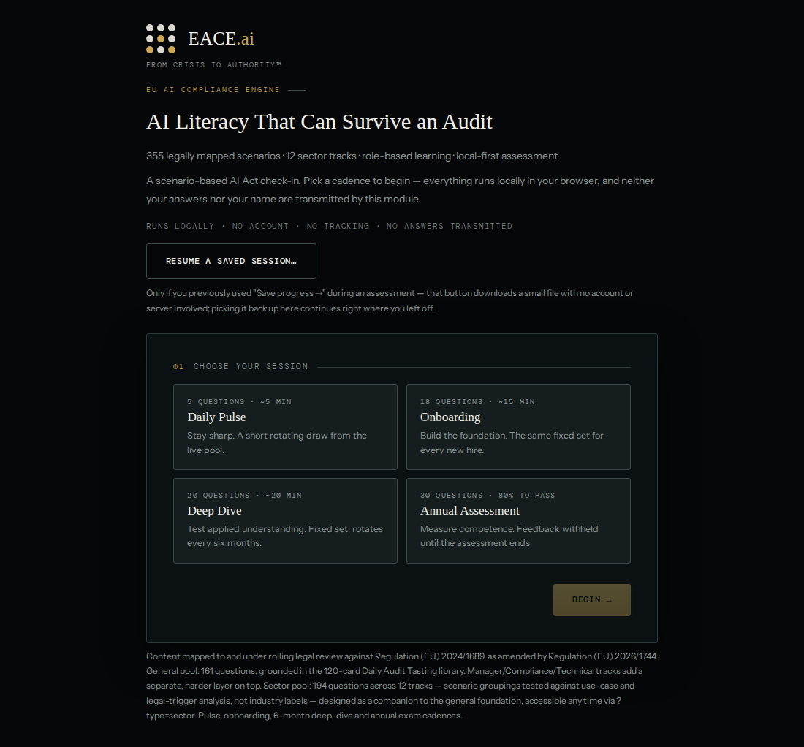

04 · Standalone module · Available separately
Compliance Tasting
Menu.
A scenario-based EU AI Act literacy assessment — available separately from the EACE Engine.
355 legally mapped scenario questions across a general pool and 12 sector tracks. Pick a cadence — Daily Pulse, Onboarding, Deep Dive, or the Annual Assessment — and work through real compliance decisions, with Alba and Kai explaining the right answer as you go. Delivered as a single self-contained HTML file: no account, no server, no installation, nothing transmitted.
Executive summary
AI literacy, tested.
Not lectured.
The Compliance Tasting Menu is a standalone regulatory-technology product, not a slide deck or a video course. It combines a Learning Engine (355 scenario questions), a Completion Layer (a lightweight self-reported receipt for everyday use), and an optional Evidence Layer (a cryptographically signed, hash-verifiable record) — kept deliberately separate rather than blurred together. It is built for organisations that need to demonstrate AI-literacy effort under Article 4 of the EU AI Act before they are ready, resourced, or mandated to run a full AI-governance programme, converting what would otherwise be a bespoke internal-training exercise into a repeatable, versioned assessment product.
Format
Single HTML file
No build step, no server, no install — open it in any modern browser
Content
355 scenario questions
Legally mapped, role-aware and sector-aware, under rolling legal review
Feedback
Alba & Kai, dual persona
Explain the correct answer immediately in every mode except the Annual Assessment
Cadences
4 session types
From a 5-question Daily Pulse to a formal 30-question Annual Assessment
Privacy
Nothing transmitted
Content-Security-Policy blocks any network call outright — a browser-enforced guarantee
Separately available
Yes
Independent of the core EACE Engine and the Risk & Governance Management System
Interface
Choose a session.
Answer for real.
The launch screen asks you to choose your session first, then a scope, then — optionally — your name. Nothing here is sent anywhere; your name lives in the session only and is used solely for that session's Completion Receipt.

The actual launch screen of the shipped application — 5 questions (~5 min) to 30 questions (80% to pass).
Choose your session
Daily Pulse (5q), Onboarding (18q, fixed), Deep Dive (20q, rotates every 6 months) or the Annual Assessment (30q, 80% to pass).
Set the scope
General, Manager, Compliance & Legal, Technical, or a Sector track — available as a scope option within Daily Pulse.
Answer, then read Alba & Kai
Pick an option and the dual-persona feedback explains why. In the Annual Assessment, feedback is withheld until you submit.
Read your result
A Competence Snapshot, a Completion Receipt, optional signed Evidence, and a structured GRC Exchange export.
Product scope
The corpus,
by the numbers.
355
Scenario questions
12
Sector tracks
4
Session cadences
0
Servers or accounts
General pool
161 questions
47 shared-foundation "all" questions, plus Manager (23), Compliance & Legal (62) and Technical (29) advanced layers
Sector pool
194 questions
Across 12 use-case and legal-trigger tracks — not industry-label classifications
Evidence Mode · Grade 1
Opt-in, off by default
A SHA-256 hash and ECDSA P-256 signature stored in the browser profile — tamper-evidence, not identity proof
GRC Exchange export
Structured JSON, v1
A versioned record for your own governance tooling — a file download, never a live call
Save & resume
Downloadable session file
No account needed — continue later in the same browser or another device
Legal basis
EU AI Act Art. 4
AI literacy, as amended by Regulation (EU) 2026/1744 — content cross-references Arts. 2–99 & Annex III
Who it's for
Different roles.
Different depth.
Content is role-aware and sector-aware, so the depth a person sees matches their actual exposure.
All employees
Daily Pulse check-ins and the fixed 18-question Onboarding set
Managers
Role-specific advanced layer on top of the shared foundation
Compliance & Legal
The largest advanced layer — 62 questions on top of the foundation
Technical staff
Advanced-layer scenarios on technical obligations and documentation
Sector-exposed teams
12 sector tracks — use-case and legal-trigger scenarios, not industry labels
HR & L&D administrators
Completion Receipt review and the embedded Evidence Admin tool
Sector coverage
12 tracks.
Legal triggers, not labels.
The 12 sector tracks are use-case and legal-trigger groupings, not industry-label classifications. Your sector does not determine your AI Act risk class — these scenarios test the legal triggers that may arise within it.
18 Q
HR & Employment
18 Q
Banking, Credit & Insurance
20 Q
Health, MedTech & Life Sciences
15 Q
Education & Training
17 Q
Public Sector & Social Services
19 Q
Law Enforcement & Justice
14 Q
Migration, Asylum & Border Control
18 Q
Critical Infrastructure, Utilities & Transport
12 Q
Telecom & Communications
15 Q
E-commerce, Retail & Marketing
12 Q
Media, Creative & Generative Content
16 Q
GPAI & AI Model Providers
Governance integration
A structured export.
Not a live integration.
Every completed session can export a structured, versioned JSON record — the EACE GRC Exchange Record v1 — for your own GRC or AI-governance tooling to ingest. It is a file download, not a live API, a vendor-specific connector, or a claimed regulatory taxonomy: this build's Content-Security-Policy blocks any network call outright, so nothing described here makes, or could make, a network call.
Envelope
Versioned JSON Schema
Field names are additive-only within a major version — nothing is silently renamed
Scope & coverage
IDs and citations only
Question IDs and legal references per item — never the question or answer text
Evidence summary
Non-identifying
Included only when Evidence Mode was used — never the person's name or the raw signature
GRC mapping
EACE's own mapping
A starting point for your control library — not a claimed regulatory or industry-standard taxonomy
Privacy note. The absence of a name in the GRC record does not make it anonymous. Its attempt_id is deliberately correlatable with the Completion Receipt, which does carry the person's name — an organisation holding both artifacts can link them to an identifiable person. Treat this record as pseudonymous personal data where that linkage is possible, and determine your own lawful basis, retention and access control accordingly.
Regulatory & technical basis
Regulatory & technical basis.
Regulatory basis
Content corpus cross-references
Within the EACE ecosystem
Three products.
Different jobs.
The Compliance Tasting Menu supports the AI-literacy obligation under Article 4. It does not perform, and is not a substitute for, the classification, technical documentation, or evidence work carried out by the EACE Engine or the Risk & Governance Management System.
| Product | Purpose | Typical user | Delivery | Available separately |
|---|---|---|---|---|
| Compliance Tasting Menu | Scenario-based AI-literacy assessment (Art. 4) | All employees, individual learners, HR/L&D | Single HTML file, local-first | ✓ Yes |
| Risk & Governance Management System | ISO 42001 AIMS-structured risk & control management | Compliance, risk and governance teams | Excel AIMS engine + HTML offline dashboard | ✓ Yes |
| EACE Engine (P1–P4) | Territorial scope, risk classification & full compliance documentation | Compliance/legal teams, providers & deployers of high-risk systems | Four prompt engines, structured document outputs | Core product |
Get started
Bring it into your
organisation.
The Compliance Tasting Menu is available separately from the core EACE Engine. Request access to discuss deployment for your team.
Important notice
What this module is —
and isn't.
Completing sessions in the Compliance Tasting Menu is evidence an organisation can point to under the EU AI Act's Article 4 AI-literacy obligation. It does not, by itself, constitute full Article 4 compliance, which depends on your organisation's broader measures and context.
A Completion Receipt is an unsigned, self-reported record that a session was completed. It does not prove identity, attendance, or that training occurred as described, and should not be cited as evidence in a dispute or in response to a regulator's specific evidentiary request. Local Evidence (Grade 1) adds browser-profile-level tamper-evidence — it proves the record has not been altered since signing, not the real-world identity of the person who completed it.
The 80% Annual Assessment threshold is EACE's own internal benchmark, not a statutory or regulatory pass mark. The underlying 355-question legal corpus is under rolling legal review and is not blanket-certified as complete or error-free.
This module does not provide legal advice, does not perform a conformity assessment, and does not generate an automated determination of your organisation's compliance status. Verify all outputs with qualified legal counsel.